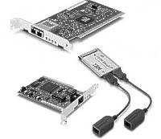
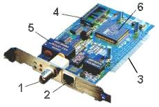

| Сетевой адаптер (net adapter, net card) — это устройство, предназначенное для соединения компьютеров в компьютерную сеть. |  |
Сетевой адаптер осуществляет низкоуровневую связь компьютеров с целью обмена данными и обобществления ресурсов. При помощи сетевых карт в сеть могут быть включены не только компьютеры, но и другие программируемые устройства, например, принтеры.
Сетевые адаптеры выпускаются 16- и 32-разрядные. Скорость передачи данных— до 56 кБит/сек и более. Адаптеры выпускаются для различных сетевых сред: Ethernet, IBM PC Network, IBM PC Token Ring, ARCNET, Novell NetWare. Сетевые карты подключаются к коаксиальному, оптоволоконному, витой паре и другим сетевым кабелям.

Компоненты
платы сетевого адаптера: разъем для подключения коаксиального кабеля (1),
разъем для подключения кабеля витая пара (2), разъем подключения устройства
к системной шине (3), разъем микросхемы постоянного запоминающего устройства
системы сетевой загрузки компьютера (BOOT ROM) (4), система постоянного
запоминающего устройства, сохраняющая программно-аппаратные установки карты
(5), процессор (6).
Устройства,
укомплектованные системой BOOT ROM способны осуществить загрузку операционной
системы компьютера с использованием сетевых ресурсов при отсутсвии собственных
накопителей.
Сетевой
адаптер использует аппаратное прерывание (IRQ), работа его поддерживается
специальными драйверами.